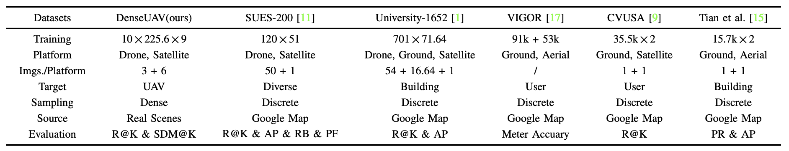
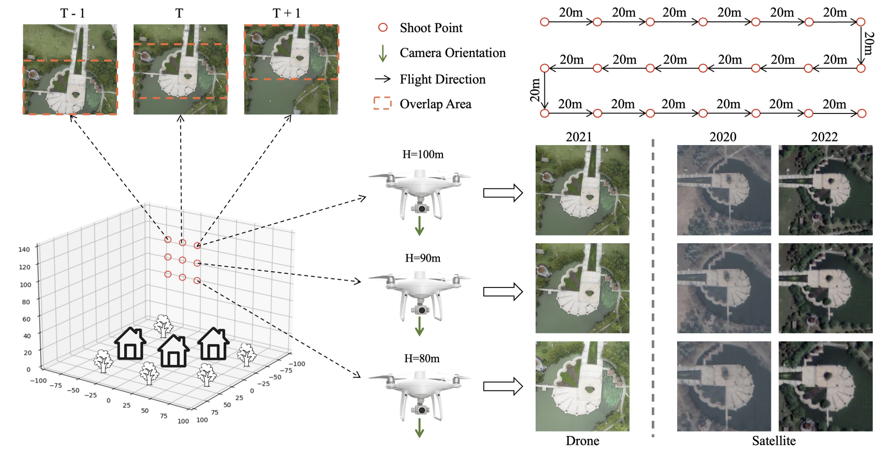
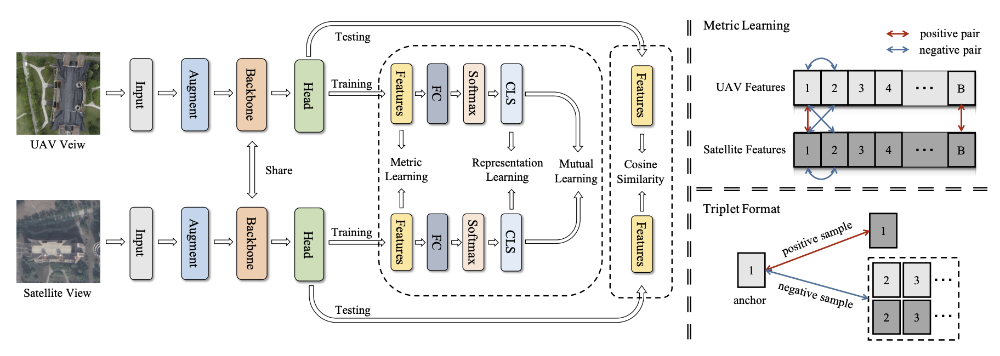
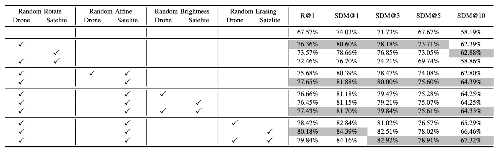
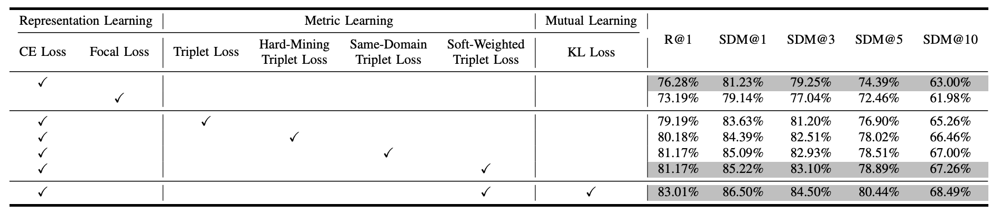
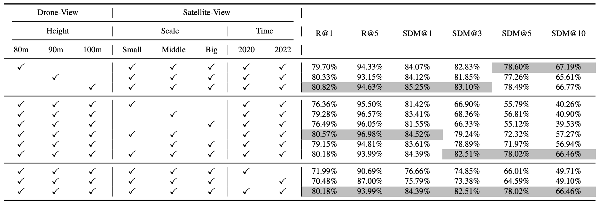
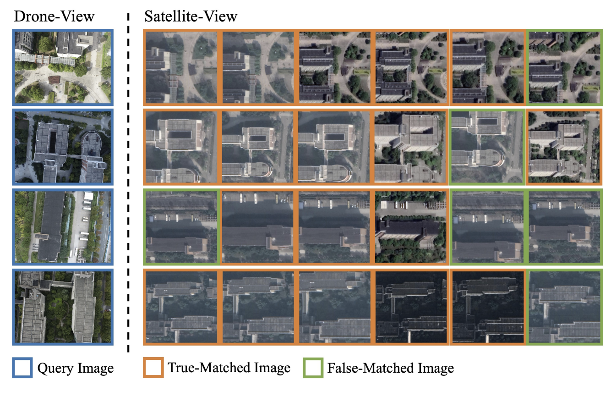

UAV self-positioning task

Characteristics of the DenseUAV dataset

Abstract
Unmanned Aerial Vehicles (UAVs) rely on satellite systems for stable positioning. However, due to limited satellite coverage or communication disruptions, UAVs may lose signals from satellite-based positioning systems. In such situations, vision-based techniques can serve as an alternative, ensuring the self-positioning capability of UAVs. However, most of the existing datasets are developed for the geo-localization tasks of the objects identified by UAVs, rather than the self-positioning task of UAVs. Furthermore, the current UAV datasets use discrete sampling on synthetic data, such as Google Maps, thereby neglecting the crucial aspects of dense sampling and the uncertainties commonly experienced in real-world scenarios. To address these issues, this paper presents a new dataset, DenseUAV, which is the first publicly available dataset designed for the UAV self-positioning task. DenseUAV adopts dense sampling on UAV images obtained in low-altitude urban settings. In total, over 27K UAV-view and satellite-view images of 14 university campuses are collected and annotated, establishing a new benchmark. In terms of model development, we first verify the superiority of Transformers over CNNs in this task. Then, we incorporate metric learning into representation learning to enhance the discriminative capacity of the model and to lessen the modality discrepancy. Besides, to facilitate joint learning from both perspectives, we propose a mutually supervised learning approach. Last, we enhance the Recall@K metric and introduce a new measurement, SDM@K, to evaluate the performance of a trained model from both the retrieval and localization perspectives simultaneously. As a result, the proposed baseline method achieves a remarkable Recall@1 score of 83.05% and an SDM@1 score of 86.24% on DenseUAV.
Dataset
The scheme for the construction of the DenseUAV dataset

Method
Overview model structure of DenseUAV baseline, includes representation learning, metric learning and mutual learning.


Data augmentation has a significant impact on the generalisation capability of UAV positioning tasks

The effect of different loss functions for the three learning styles.

Data-level effects, including flight altitude, satellite image scale and satellite sampling time.
